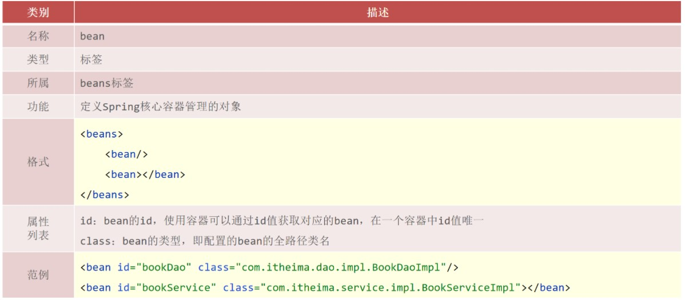
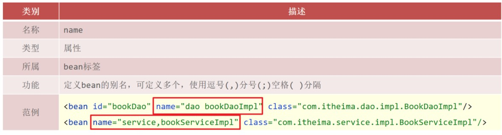

8. AOP¶
核心概念¶
AOP(Aspect Oriented Programming)面向切面编程，一种编程范式，指导开发者如何组织程序结构，AOP在不改原有代码的前提下对其进行增强

注解
连接点(JoinPoint)：程序执行过程中的任意位置，粒度为执行方法、抛出异常、设置变量等
在SpringAOP中，理解为方法的执行
切入点(Pointcut)：匹配连接点的式子
在SpringAOP中，一个切入点可以描述一个具体方法，也可也匹配多个方法
具体的方法：如com.linzz.dao包下的BookDao接口中的无形参无返回值的save方法
匹配多个方法：所有的save方法，所有的get开头的方法，所有以Dao结尾的接口中的任意方法，所有带有一个参数的方法
连接点范围要比切入点范围大，是切入点的方法也一定是连接点，但是是连接点的方法就不一定要被增强，所以可能不是切入点。
通知(Advice)：在切入点处执行的操作，也就是共性功能
在SpringAOP中，功能最终以方法的形式呈现
通知类：定义通知的类
切面(Aspect)：描述通知与切入点的对应关系。
AOP入门¶
添加依赖
<dependency> <groupId>org.aspectj</groupId> <artifactId>aspectjweaver</artifactId> <version>1.9.4</version> </dependency>
因为
spring-context中已经导入了spring-aop,所以不需要再单独导入spring-aop导入AspectJ的jar包，AspectJ是AOP思想的一个具体实现，Spring有自己的AOP实现，但是相比于AspectJ来说比较麻烦，所以直接采用Spring整合ApsectJ的方式进行AOP开发。
定义接口与实现类
定义通知类和通知
public class MyAdvice { public void method(){ System.out.println(System.currentTimeMillis()); } }
定义切入点
public class MyAdvice { @Pointcut("execution(void com.linzzz.dao.BookDao.update())") private void pt(){} public void method(){ System.out.println(System.currentTimeMillis()); } }
制作切面
public class MyAdvice { @Pointcut("execution(void com.linzzz.dao.BookDao.update())") private void pt(){} @Before("pt()") public void method(){ System.out.println(System.currentTimeMillis()); } }
绑定切入点与通知关系，并指定通知添加到原始连接点的具体执行 位置
将通知类配给容器并标识其为切面类
@Component @Aspect public class MyAdvice { @Pointcut("execution(void com.linzzz.dao.BookDao.update())") private void pt(){} @Before("pt()") public void method(){ System.out.println(System.currentTimeMillis()); } }
开启注解格式AOP功能
@Configuration @ComponentScan("com.linzzz") @EnableAspectJAutoProxy public class SpringConfig { }
AOP工作流程¶
AOP是基于Spring容器管理的bean做的增强，所以整个工作过程需要从Spring加载bean开始
Spring容器启动
此时，需要加载的类有：（1） 被增强类，如:BookServiceImpl、 （2） 通知类，如:MyAdvice， bean对象此时还没有创建成功
读取所有切面配置中的切入点
初始化bean

注意
匹配失败，创建原始对象，说明不需要增强，直接调用原始对象的方法即可。
匹配成功，创建原始对象（ 目标对象 ）的 代理 对象
获取bean执行方法
获取的bean是原始对象时，调用方法并执行，完成操作
获取的bean是代理对象时，根据代理对象的运行模式运行原始方法与增强的内容，完成操作
注解
如果目标对象中的方法会被增强，那么容器中将存入的是目标对象的代理对象
如果目标对象中的方法不被增强，那么容器中将存入的是目标对象本身。
AOP配置管理¶

语法格式¶
切入点:要进行增强的方法
切入点表达式:要进行增强的方法的描述方式
重要
切入点表达式的语法为:
切入点表达式标准格式：动作关键字(访问修饰符 返回值 包名.类/接口名.方法名(参数) 异常名）
execution(public User com.linzzz.service.UserService.findById(int))
execution：动作关键字，描述切入点的行为动作，例如execution表示执行到指定切入点
public：访问修饰符,还可以是public，private等，可以省略
User：返回值，写返回值类型
com.linzzz.service：包名，多级包使用点连接
UserService：类/接口名称
findById：方法名
int：参数，直接写参数的类型，多个类型用逗号隔开
异常名：方法定义中抛出指定异常，可以省略
通配符¶
\*：单个独立的任意符号，可以独立出现，也可以作为前缀或者后缀的匹配符出现execution(public * com.linzzz.*.UserService.find*(*))
匹配com.linzzz包下的任意包中的UserService类或接口中所有find开头的带有一个参数的方法
..：多个连续的任意符号，可以独立出现，常用于简化包名与参数的书写execution(public User com..UserService.findById(..))
匹配com包下的任意包中的UserService类或接口中所有名称为findById的方法
+：专用于匹配子类类型execution(* *..*Service+.*(..))
*Service+ 表示所有以Service结尾的接口的子类。
e.g.
// 匹配接口，能匹配到 execution(void com.linzzz.dao.BookDao.update()) // 匹配实现类，能匹配到 execution(void com.linzzz.dao.impl.BookDaoImpl.update()) // 返回值任意，能匹配到 execution(* com.linzzz.dao.impl.BookDaoImpl.update()) // 返回值任意，但是update方法必须要有一个参数，无法匹配，要想匹配需要在update接口和实现类添加参数 execution(* com.linzzz.dao.impl.BookDaoImpl.update(*)) // 返回值为void,com包下的任意包三层包下的任意类的update方法，匹配到的是实现类，能匹配 execution(void com.*.*.*.*.update()) // 返回值为void,com包下的任意两层包下的任意类的update方法，匹配到的是接口，能匹配 execution(void com.*.*.*.update()) // 返回值为void，方法名是update的任意包下的任意类，能匹配 execution(void *..update()) // 匹配项目中任意类的任意方法，能匹配，但是不建议使用这种方式，影响范围广 execution(* *..*(..)) // 匹配项目中任意包任意类下只要以u开头的方法，update方法能满足，能匹配 execution(* *..u*(..)) // 匹配项目中任意包任意类下只要以e结尾的方法，update和save方法能满足，能匹配 execution(* *..*e(..)) // 返回值为void，com包下的任意包任意类任意方法，能匹配，*代表的是方法 execution(void com..*()) // 将项目中所有业务层方法的以find开头的方法匹配 execution(* com.linzzz.*.*Service.find*(..)) // 将项目中所有业务层方法的以save开头的方法匹配 execution(* com.linzzz.*.*Service.save*(..))
书写技巧¶
所有代码按照标准规范开发，否则以下技巧全部失效
描述切入点通常 描述接口 ，而不描述实现类,如果描述到实现类，就会出现紧耦合
访问控制修饰符针对接口开发均采用public描述（可省略访问控制修饰符描述）
返回值类型对于增删改类使用精准类型加速匹配，对于查询类使用
\*通配快速描述
包名 书写 尽量不使用..匹配，效率过低，常用
\*做单个包描述匹配，或精准匹配
接口名/类名 书写名称与模块相关的采用
\*匹配，例如 UserService 书写成 *Service，绑定业务层接口名
方法名 书写以 动词 进行 精准匹配，名词采用
\*匹配，例如getById书写成getBy*, selectAll书写成selectAll
通常 不使用异常 作为匹配规则
AOP通知类型¶
AOP共提供了5种通知类型:
前置通知
后置通知
环绕通知(重点)
返回后通知(了解)
抛出异常后通知(了解)

(1). 前置通知： 追加功能到方法执行前,类似于在代码1或者代码2添加内容
(2). 后置通知： 追加功能到方法执行后,不管方法执行的过程中有没有抛出异常都会执行，类似于在代码5添加内容
(3). 返回后通知： 追加功能到方法执行后，只有方法正常执行结束后才进行,类似于在代码3添加内容，如果方法执行抛出异常，返回后通知将不会被添加
(4). 抛出异常后通知： 追加功能到方法抛出异常后，只有方法执行出异常才进行,类似于在代码4添加内容，只有方法抛出异常后才会被添加
(5). 环绕通知： 环绕通知功能比较强大，它可以追加功能到方法执行的前后，这也是比较常用的方式，它可以实现其他四种通知类型的功能
@Component
@Aspect
public class MyAdvice {
@Pointcut("execution(void com.linzzz.dao.BookDao.update())")
private void pt(){}
@Before("pt()")
//此处也可以写成 @Before("MyAdvice.pt()"),不建议
public void before() {
System.out.println("before advice ...");
}
@After("pt()")
public void after() {
System.out.println("after advice ...");
}
@Around("pt()")
public void around(ProceedingJoinPoint pjp) throws Throwable{
System.out.println("around before advice ...");
//表示对原始操作的调用
pjp.proceed();
System.out.println("around after advice ...");
}
@AfterReturning("pt()")
public void afterReturning() {
System.out.println("afterReturning advice ...");
}
@AfterReturning("pt()")
public void afterThrowing() {
System.out.println("afterThrowing advice ...");
}
}
注解
原始方法有返回值的处理
@Around("pt()") public Object around(ProceedingJoinPoint pjp) throws Throwable { System.out.println("around before advice ..."); //表示对原始操作的调用 Object ret = pjp.proceed(); System.out.println("around after advice ..."); return ret; }
为什么返回的是Object而不是int的主要原因是Object类型更通用。
在环绕通知中是可以对原始方法返回值就行修改的。
环绕通知必须依赖形参ProceedingJoinPoint才能实现对原始方法的调用，进而实现原始方法调用前后同时添加通知
通知中如果未使用ProceedingJoinPoint对原始方法进行调用将跳过原始方法的执行
对原始方法的调用可以不接收返回值，通知方法设置成void即可，如果接收返回值，最好设定为Object类型
原始方法的返回值如果是void类型，通知方法的返回值类型可以设置成void,也可以设置成Object
由于无法预知原始方法运行后是否会抛出异常，因此环绕通知方法必须要处理Throwable异常
如何区分到底是哪个接口的哪个方法执行的
@Around("Pt()") public void around(ProceedingJoinPoint pjp){ //获取执行签名信息 Signature signature = pjp.getSignature(); //通过签名获取执行操作名称(接口名) String className = signature.getDeclaringTypeName(); //通过签名获取执行操作名称(方法名) String methodName = signature.getName(); System.out.println("执行："+ className+"."+methodName+"---->" +(end-start) + "ms"); }
AOP通知获取数据¶
获取切入点方法的参数，所有的通知类型都可以获取参数
JoinPoint：适用于前置、后置、返回后、抛出异常后通知
ProceedingJoinPoint：适用于环绕通知
获取参数
非环绕通知获取方式（在方法上添加JoinPoint,通过JoinPoint来获取参数）
@Component @Aspect public class MyAdvice { @Pointcut("execution(* com.linzzz.dao.BookDao.findName(..))") private void pt(){} @Before("pt()") public void before(JoinPoint jp) Object[] args = jp.getArgs(); System.out.println(Arrays.toString(args)); System.out.println("before advice ..." ); } }
注意
思考:方法的参数只有一个，为什么获取的是一个数组?
因为参数的个数是不固定的，所以使用数组更通配些。
说明:
使用JoinPoint的方式获取参数适用于
前置、后置、返回后、抛出异常后通知。环绕通知获取方式（在方法上添加ProceedingJoinPoint）
@Component @Aspect public class MyAdvice { @Pointcut("execution(* com.itheima.dao.BookDao.findName(..))") private void pt(){} @Around("pt()") public Object around(ProceedingJoinPoint pjp)throws Throwable { Object[] args = pjp.getArgs(); System.out.println(Arrays.toString(args)); Object ret = pjp.proceed(); return ret; } }
注意
pjp.proceed()方法是有两个构造方法，分别是:

调用无参数的proceed，当原始方法有参数，会在调用的过程中自动传入参数
当需要修改原始方法的参数时，就只能采用带有参数的方法
@Around("pt()") public Object around(ProceedingJoinPoint pjp) throws Throwable{ Object[] args = pjp.getArgs(); System.out.println(Arrays.toString(args)); args[0] = 666; Object ret = pjp.proceed(args); return ret; }
获取返回值
对于返回值，只有返回后
AfterReturing和环绕Around这两个通知类型可以获取环绕通知获取返回值
@Around("pt()") public Object around(ProceedingJoinPoint pjp) throws Throwable{ Object[] args = pjp.getArgs(); System.out.println(Arrays.toString(args)); args[0] = 666; Object ret = pjp.proceed(args); return ret; }
ret就是方法的返回值，可以直接获取，也可以进行修改。返回后通知获取返回值
@AfterReturning(value = "pt()",returning = "ret") public void afterReturning(Object ret) { System.out.println("afterReturning advice ..."+ret); }
注意
(1). 参数名的问题

(2). afterReturning方法参数类型的问题
参数类型可以写成String，但是为了能匹配更多的参数类型，建议写成Object类型
(3). afterReturning方法参数的顺序问题

获取异常
对于获取抛出的异常，只有抛出异常后
AfterThrowing和环绕Around这两个通知类型可以获取环绕通知获取异常
@Around("pt()") public Object around(ProceedingJoinPoint pjp){ Object[] args = pjp.getArgs(); System.out.println(Arrays.toString(args)); args[0] = 666; Object ret = null; try{ ret = pjp.proceed(args); }catch(Throwable throwable){ t.printStackTrace(); } return ret; }
抛出异常后通知获取异常
@AfterThrowing(value = "pt()",throwing = "t") public void afterThrowing(Throwable t) { System.out.println("afterThrowing advice ..."+t); }
注意

总结¶
AOP的核心概念¶
概念：AOP(Aspect Oriented Programming)面向切面编程，一种编程范式
作用：在不惊动原始设计的基础上为方法进行功能 增强
核心概念
代理（Proxy）：SpringAOP的核心本质是采用代理模式实现的
连接点（JoinPoint）：在SpringAOP中，理解为任意方法的执行
切入点（Pointcut）：匹配连接点的式子，也是具有共性功能的方法描述
通知（Advice）：若干个方法的共性功能，在切入点处执行，最终体现为一个方法
切面（Aspect）：描述通知与切入点的对应关系
目标对象（Target）：被代理的原始对象成为目标对象
切入点表达式¶
切入点表达式标准格式：动作关键字(访问修饰符 返回值 包名.类/接口名.方法名（参数）异常名)
execution(* com.linzzz.service.*Service.*(..))
切入点表达式描述通配符：
作用：用于快速描述，范围描述
\*：匹配任意符号（常用）..：匹配多个连续的任意符号（常用）\+：匹配子类类型
切入点表达式书写技巧
按 标准规范 开发
查询操作的返回值建议使用*匹配
减少使用..的形式描述包
对接口进行描述，使用 * 表示模块名，例如UserService的匹配描述为*Service
方法名书写保留动词，例如get，使用 * 表示名词，例如getById匹配描述为getBy*
参数根据实际情况灵活调整
五种通知类型¶
前置通知
后置通知
环绕通知（重点）
环绕通知依赖形参
ProceedingJoinPoint才能实现对原始方法的调用环绕通知可以隔离原始方法的调用执行
环绕通知返回值设置为
Object类型环绕通知中可以对原始方法调用过程中出现的异常进行处理
返回后通知
抛出异常后通知
通知中获取参数¶
获取切入点方法的参数，所有的通知类型都可以获取参数
JoinPoint：适用于前置、后置、返回后、抛出异常后通知
ProceedingJoinPoint：适用于环绕通知
获取切入点方法返回值，前置和抛出异常后通知是没有返回值，后置通知可有可无
返回后通知
环绕通知
获取切入点方法运行异常信息，前置和返回后通知是不会有，后置通知可有可无
抛出异常后通知
环绕通知